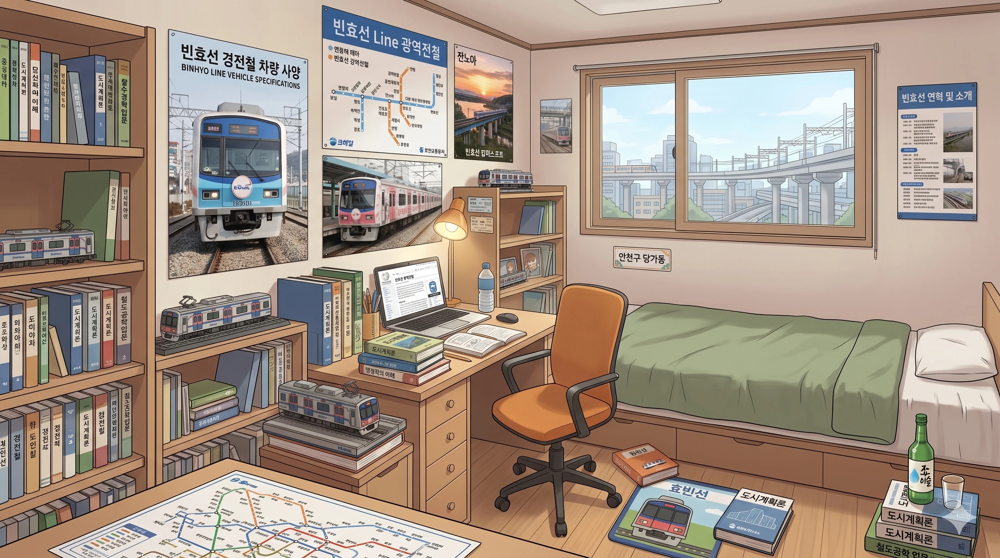
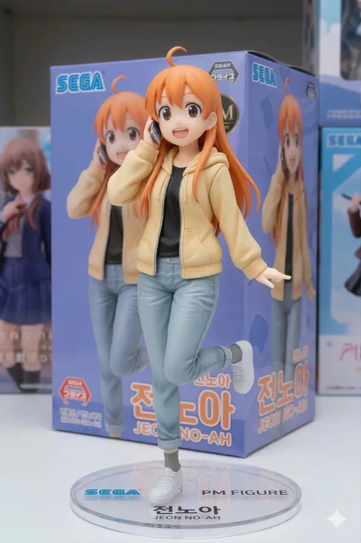
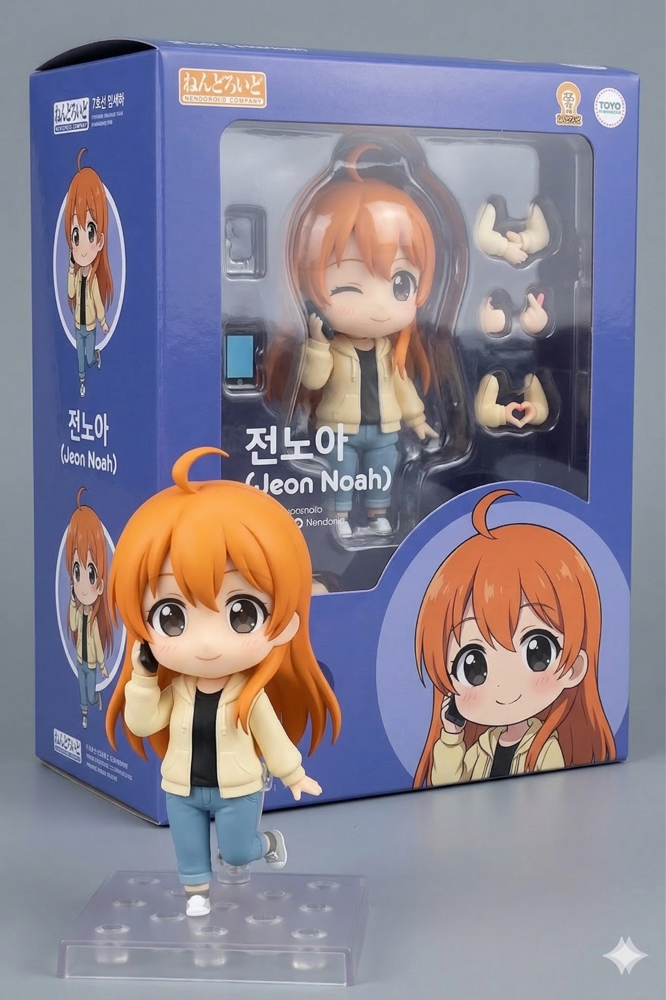
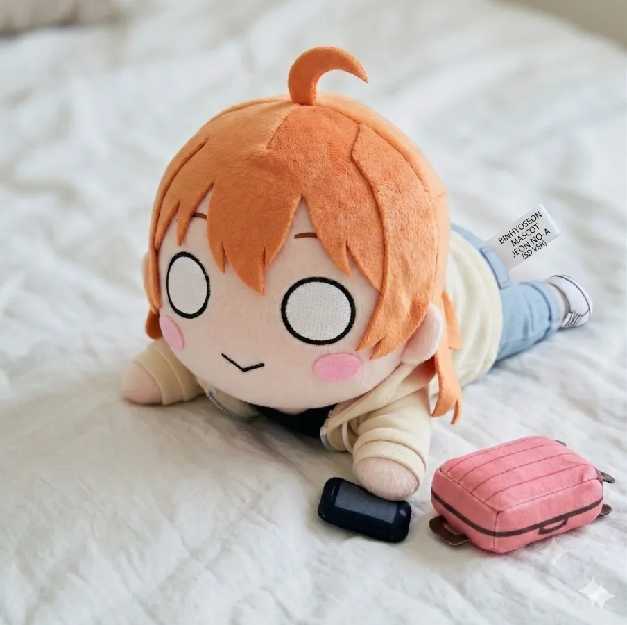
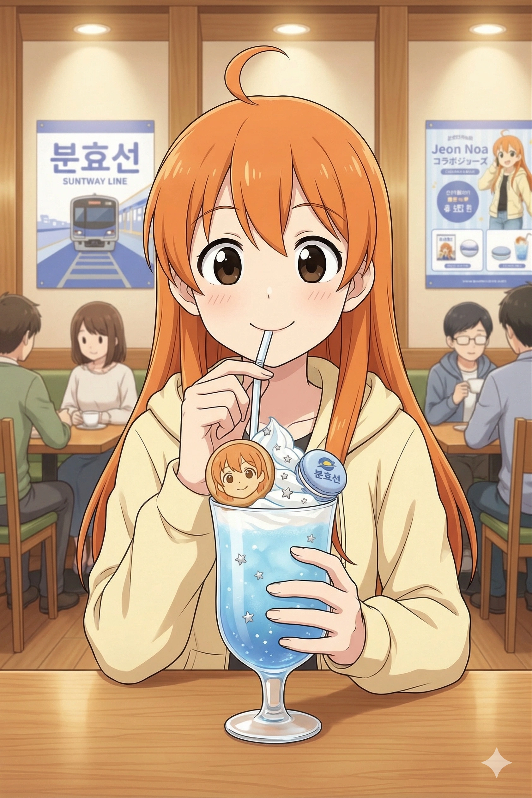
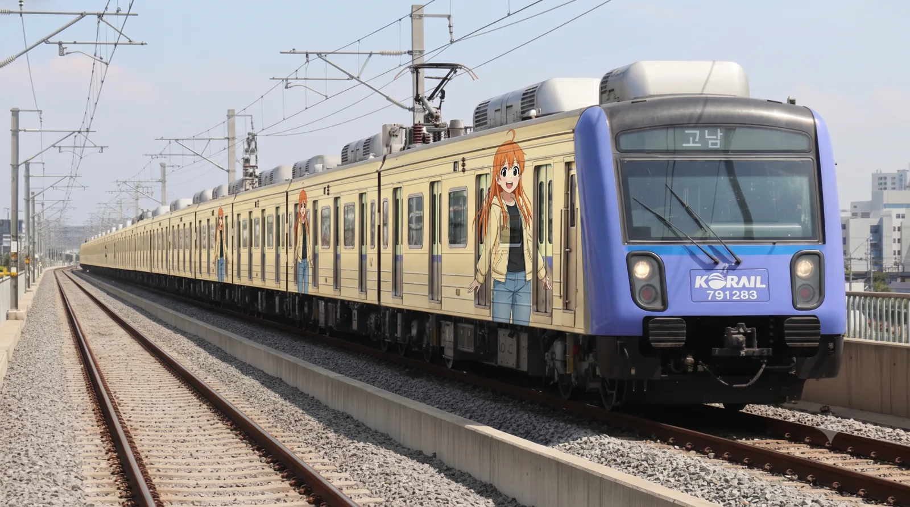
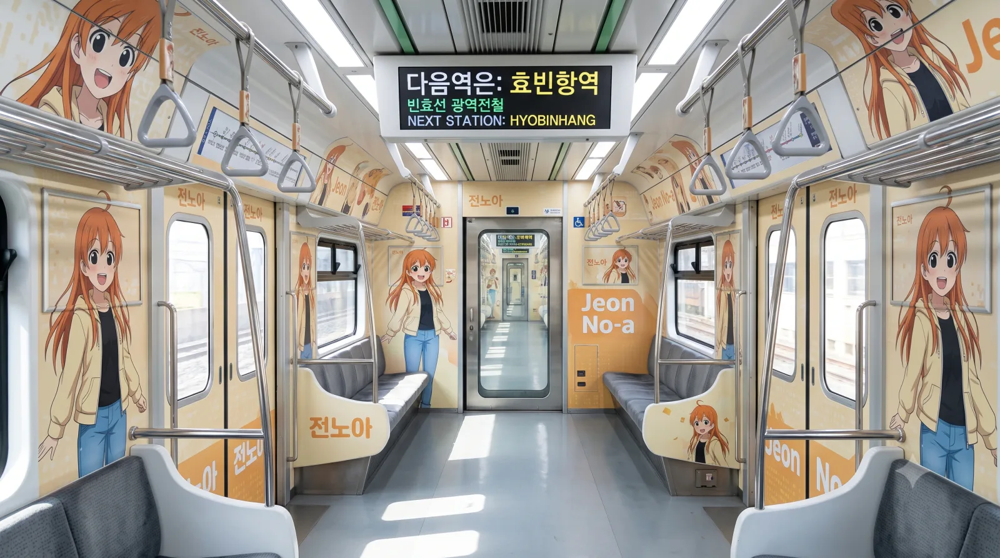

효빈교통공사 캐릭터들
| 등 장 인 물 |
1호선 | 2호선 | 3호선 | 4호선 | 5호선 | 창전선 |
|---|---|---|---|---|---|---|
 고나미 고나미 |
 하루빈 하루빈 |
 박라미 박라미 |
 다로나 다로나 |
 미소하 미소하 |
 심세이 심세이 |
|
| 6호선 | 7호선 | 8호선 | 빈효선* | |||
 라세나 라세나 |
 임세정 임세정 |
 임세하 임세하 |
 유리아 유리아 |
 전노아 전노아 |
||
|
* 빈효선: 노선 운영은 효빈교통공사가 아닌 코레일(한국철도공사)이 담당하지만, 지역 인프라 특성상 같이 묶여서 캐릭터 사업으로 진행됨. * 창전선 (본 문서 캐릭터 소속) 등 신규 노선은 개통 및 캐릭터 정식 데뷔 시점에 맞춰 틀에 추가될 예정입니다. (현재 심세이 정식 등재 완료) |
||||||
- 1. 개요
- 2. 상세 설정
- 2.1. 성격 및 특징 (정의로운 관종)
- 2.2. 학력 및 능력
- 2.3. 정치 성향 (행정 불도저)
- 2.4. 외형 및 디자인
- 2.5. 목소리 및 성우 연기
- 3. 인간 관계
- 3.1. 가족 관계
- 4. 러닝 개그 및 특수 설정
- 5. 여담 (캐스팅 비화 및 미디어 믹스)
- 6. 미디어 믹스 및 굿즈
1. 개요
아이돌처럼 상큼하게 등장해서 조폭처럼 행정 서류 결재를 뜯어내는 기획팀의 광견.
효빈권 광역전철 빈효선을 상징하는 마스코트 캐릭터. 빈효선 노선 자체는 2017년에 개통했지만, 캐릭터 전노아는 노선 개통 3년 뒤인 2020년에 뒤늦게 기획되어 세상에 화려하게 데뷔했다. 직업은 대학생이며, 효빈시 안천구에 위치한 평안명대학교 행정학과 1학년에 재학 중인 파워 인싸 새내기이자 대학교 조별과제 생태계의 최상위 포식자다.
태생적으로는 효빈교통공사 소속(1~8호선)이 아닌 한국철도공사(코레일) 관할 소속 캐릭터이다. 하지만 워낙 관종력이 뛰어나고 오지랖이 태평양 같아, 소속의 벽을 허물고 효빈교통공사 마스코트들과 아예 한 팀처럼 묶여서 활동하고 있다. 빈효선의 상징색은 청량한 '연청색(#6677CC)'이지만, 본인의 퍼스널 컬러는 톡톡 튀는 오렌지색(귤색)으로 어디서든 눈에 띄는 존재감을 자랑한다.
메타적으로는 정시원 코레일 효빈지역본부장이 "국가 철도가 유치하게 캐릭터 사업을 하냐"며 반대하던 보수적인 본사 임원들을 300페이지 분량의 '서브컬처 연계 철도 수익성 분석 보고서'로 후려패고 2020년에 탄생시킨 '친딸' 같은 캐릭터다. 러브라이버인 정시원 본부장의 피, 땀, 눈물(그리고 확고한 오타쿠적 사심)이 완벽하게 농축된 결정체로 평가받는다.
2. 상세 설정

2.1. 성격 및 특징 (정의로운 관종)
"정리·요약·절차의 화신이자, 플래시 세례를 세상에서 제일 좋아하는 정의로운 관종".
주목받는 것을 숨 쉬는 것만큼 좋아하고, 칭찬 한 마디만 들으면 역사 한복판에서 춤을 출 정도로 흥이 넘쳐흐르는 전형적인 ENFJ의 표본이다. 하지만 그녀는 단순히 관심만 끄는 '속 빈 강정'이 절대 아니다. 불합리한 행정 처리나 윗선 공무원들에게서 "전례가 없어서 안 됩니다"라는 마법의 핑계 단어를 듣는 순간, 눈이 훼까닥 돌아가며 '어뮤즈의 광견 모드'가 발동한다. 관련 법규, 지방자치법, 행정 절차법을 끝까지 물고 늘어지며 될 때까지 기안서를 밀어 넣는 미친 집요함을 자랑한다. 이때 목소리가 3옥타브에서 지하 3층으로 착 가라앉는데, 듣는 관할 공무원들은 공포에 질려 식은땀을 줄줄 흘린다.
평소에는 흡사 아이돌 음악방송 MC 톤으로 부서 회의나 조별 과제를 주도하며, 방대하고 꼬여있는 수십 장의 회의 내용을 즉석에서 단 세 줄로 깔끔하게 압축 요약하는 사기적인 능력이 탁월하다. "팩트 확인 → 쟁점 요약 → 선택지 제시 → 액션 플랜 확정"으로 숨 쉴 틈 없이 몰아치는 전노아식 대화 패턴은 그녀의 트레이드마크. 이 잘난 성격 탓에 평생 '일 복'이 터져버린 슬픈 관상이다.
일할 때나 행정 기획을 할 때는 숨 막히는 완벽주의자 그 자체지만, 일상적인 생활력은 끔찍할 정도로 꽝이다. 대학교 학식 메뉴를 못 골라 식권 발매기 앞에서 10분 넘게 서성이거나, 뇌를 200% 오버클럭하여 기획안을 짠 뒤 급격한 혈당 저하로 책상에 슬라임처럼 쓰러지는 등 허당끼가 다분하다. 이럴 때마다 라세나가 익숙한 듯 초코바를 입에 쑤셔 넣어준다.

2.2. 학력 및 능력
안천구 당가동 토박이로 당가초-당가중-당가고를 다니다가, 2학년 때 효빈시 명문 학군인 중수여자고등학교로 전학을 오게 되었다. 학업 성적 자체는 평범한 중상위권이었으나, 압도적인 언변과 사람을 홀리는 통솔력으로 학생회와 동아리 활동에서 전설적인 두각을 나타냈다. 현재는 평안명대학교 행정학과에 진학해 관료 마스터로 쑥쑥 자라는 중이다.
학업 성취도
전형적인 '입 털고 서류 만드는' 문과형 기획 인재. 수학은 가볍게 남에게 짬처리한다.
| 과목 | 등급 (내신) | 비고 |
|---|---|---|
| 국어(화법/작문) | 1등급 싹쓸이 | 논리적인 말하기, 청중을 압도하는 100장짜리 PPT 발표 능력은 가히 전교 최상위권. 교수님들이 노아의 발표를 들으며 감동의 눈물을 흘렸다는 전설이 있다. |
| 사회(법과 정치) | 1등급 | 행정학도의 싹수. 조례와 법의 맹점을 교묘하게 파고들어 합법적으로 학교 예산을 타내는 데 특화되어 있다. |
| 수학/과학 | 3 ~ 4등급 |
가장 유명한 이력은 고등학교 2학년 전학 시절, 부원 미달로 강제 폐부 당하기 1초 전이었던 '중수여고 철도탐구동아리'를 구원해 낸 사건이다. 당시 임세하와 라세나에게 '매점 빵'으로 강제 포섭당했으나, 오히려 본인이 기장을 먹어버리고 초대형 철도 디오라마 전시회를 기획해 동아리를 부활시켰다. 이로 인해 철도 덕력은 C~A-(행정·정책 기획 전문 철덕) 수준으로 단련되었다.
2.3. 정치 성향 (행정 불도저)
對 윤대환 (전 효빈시장): 구시대의 적폐이자 극혐 대상 1호.
행정학 전공자로서, 윤대환이 시장 재임 시절 보여준 전형적인 보여주기식 탁상행정, 꽉 막힌 관료주의, 예산 낭비를 뼈저리게 혐오한다. 윤대환 이름만 나와도 "그 인간은 행정의 '행'자도 입에 담을 자격이 없는 적폐입니다! 결재 도장 당장 압수해서 한강에 버려야 돼요!"라며 대놓고 극혐한다.
對 윤석열 (전 대통령): 행정학도의 역린이자 최악의 반면교사. (경멸)
2024~2025년 당시, 멀쩡한 국가 경제를 말아먹고 대통령실 이전에 천문학적인 혈세를 낭비하던 윤석열 정부가 코레일과 효빈교통공사의 최고 흑자 사업인 '캐릭터 굿즈 사업'을 "예산 낭비"라며 탄압하려 했을 때, 노아는 분노로 며칠 밤잠을 설쳤다. 특히 12.3 비상계엄 사태 당시 군대를 동원해 코레일과 효빈시 철도 인프라를 장악하려 했던 만행을 두고, "헌법과 행정 절차법을 쓰레기통에 처박은, 21세기 민주 행정 국가에서 절대 일어날 수 없는 끔찍한 행정 참사"라며 거품을 물고 비판한다. 대학교 전공수업 발제 시간마다 윤석열 정부의 행정 및 정책 실패 사례를 신랄하게 분석하고 찢어발겨 교수님들로부터 A+ 학점을 싹쓸이하고 있다.
對 박효빈 (현 시장): 경이로움 그 자체, 행정의 신(神).
꽉 막힌 행정 절차를 합법적인 선에서 박살 내는 박 시장의 불도저 같은 행보에 완벽하게 매료되었다. "보통 지자체 관료들 결재 라인 타면 한 달은 거뜬히 썩을 기획안을, 박 시장님이 단 3일 만에 다이렉트로 통과시키셨어요! 이게 바로 현대 행정의 마스터피스죠!" 라며 시장실을 향해 절대적인 충성을 맹세한다. 윤석열 정부의 탄압으로부터 서브컬처 문화를 목숨 걸고 지켜낸 박 시장을 사실상 종교적 구원자 수준으로 숭배한다.
2.4. 외형 및 디자인 (귤대장의 현신과 기적의 혼종 룩)
공식 일러스트에서 가장 먼저 시선을 사로잡는 것은 단연 상큼한 오렌지색 단발머리(대학생 땐 장발)와 정수리에 뿅 솟아오른 둥근 바보털(아호게)이다. 얌전하거나 무뚝뚝한 다른 캐릭터들과 달리, 한쪽 다리를 뒤로 살짝 든 채 해맑게 웃고 있는 역동적인 포즈는 그녀의 '쉬지 않고 일하는 파워 ENFJ 기획자'로서의 아이덴티티를 100% 보여준다. 일러스트는 나이에 따라 크게 두 가지 버전으로 나뉜다.
아이보리 셔츠에 커다란 빨간 리본, 그리고 짙은 회색 스커트. 단발머리로 풋풋함을 자랑한다. 코레일 본부장(제복파)과 교통공사 사장(아이돌파)의 피 터지는 싸움 끝에 도출된 기적의 믹스매치 교복 룩이다.
 평안명대학교 행정학과 24학번
평안명대학교 행정학과 24학번
머리를 길게 기른 현재 모습. 평안명대 과잠(Varsity Jacket)을 걸치고 캠퍼스를 뛰며 쉴 새 없이 조별과제 팀원들의 멱살을 잡고 하드캐리하는 파워 인싸 대학생의 표본이다.
오렌지색 머리, 솟아오른 바보털, 파워 인싸 성격, 심지어 고등학교 교복(빨간 리본 타이와 스커트)의 배색까지. 서브컬처 팬이라면 누구나 옆 동네 러브라이브! 선샤인!!의 주인공이자 귤대장인 타카미 치카를 떠올릴 수밖에 없는 완벽한 판박이 디자인이다. 이는 8월 1일생으로 치카와 생일까지 똑같은 정시원 본부장의 맹목적인 사심이 500% 반영된 결과라는 것이 학계의 정설이다.
재미있는 점은 단순한 오마주로 끝나지 않았다는 것이다. 놀랍게도 효빈광역시와 러브라이브 션샤인의 무대인 일본 시즈오카현 '누마즈시(沼津市)'가 정식으로 자매결연을 맺으면서, 현재 코레일 빈효선 측에서 '타카미 치카' 본인과 냅다 공식 콜라보를 진행 중이다. 치카와 노아가 어깨동무를 하고 찍은 콜라보 포스터가 효빈역에 걸리자, 철덕과 럽폭도들은 "누가 치카고 누가 노아인지 분간이 안 간다", "성덕(성공한 덕후) 정시원의 궁극적 도달점이다"라며 대환호하며 끊임없이 성지순례를 오고 있다.
두 버전의 일러스트 모두 오른손에 스마트폰을 들고 누군가와 통화하고 있다는 소름 돋는 공통점이 있다. 해맑게 웃고 있지만, 아마 통화 내용은 "네, 주무관님~ 그 기안서 어제 넘겼는데 왜 아직도 결재가 안 났을까요?^^ 제가 지금 바로 구청으로 찾아갈까요?" 같은 살벌한 행정 독촉 전화일 확률이 99.9%다.
2.5. 목소리 및 성우 연기 (외형 불일치와 광기의 대폭발)
전노아의 진정한 매력이자 혼란은 '외모'와 '성우'의 극단적인 인지부조화, 그리고 상상을 초월하는 갭 차이 연기에서 폭발한다.
-
일본판 성우: 마에다 카오리 (외형은 치카인데 목소리는 시즈쿠?!)
여기서 전노아 팬덤 최대의 대환장 파티가 열린다. 캐릭터 겉모습은 빼박 '타카미 치카(CV. 이나미 안쥬)'인데, 정작 목소리는 얌전한 연극부 소녀인 '오사카 시즈쿠(니지가사키)'를 맡았던 마에다 카오리가 낸다는 것! 이 기묘한 멀티버스 캐스팅 때문에 초창기 덕후들은 심각한 뇌 정지를 겪어야 했다.
하지만 카오링(마에다 카오리)의 연기가 입혀진 순간 의문은 찬양으로 바뀌었다. 평상시 공식 브리핑을 할 때는 시즈쿠 특유의 청순하고 똑 부러진 아나운서 톤을 내지만, 행정 절차가 막히거나 특히 '회식 자리' 설정이 들어가는 순간 성우 본연의 본성인 어뮤즈의 광견(술주정뱅이) 모드가 거침없이 튀어나오기 때문이다. 2022년 내한 당시 사석에서 참이슬 프레시를 거하게 들이켜고 "야!!! 예산 내놓으라고!!! 앙?! 건배애앸!!!" 하고 질러버리는 아재 섞인 샤우팅을 직관한 정시원 본부장이 "저 광기가 바로 코레일이 원하던 행정가다!"라며 현장에서 즉각 캐스팅했다는 일화는 전설이 되었다. 이 미친 연기 폭 덕분에 노아는 타카미 치카의 비주얼과 환상적인 부조화를 이루며 생명력을 얻었다. -
한국판 성우: 김현지 (D.Va 텐션과 냉혹한 행정관의 공존)
디바(오버워치)나 백멍이(요괴워치)에서 보여주었던 '특유의 통통 튀고 텐션 높지만 묘하게 건방진 파워 인싸' 연기의 정점을 찍었다. 평소 "이 사안의 핵심은 세 가지입니닷! 찡긋!" 할 때는 꿀이 뚝뚝 떨어지지만, 조별과제 무임승차자를 발견하거나 무능한 부패 공무원을 짓밟을 때는 갑자기 목소리에서 웃음기가 싹 빠진다. "선배님. 이번 기안에서 이름 뺍니다? 수고하세요. (딸깍)" 하며 온도가 절대영도로 떨어지는 냉혹한 톤 변신은 K-대학생들의 엄청난 소름과 PTSD를 유발하며 극찬을 받고 있다.
3. 인간 관계
-
정시원 (코레일 효빈지역본부장): 메타 세계관에서 전노아를 기획하고 탄생시킨 '창조주이자 영혼의 아버지'. 보수적인 꼰대들이 가득한 코레일 본사를 300페이지짜리 덕력 보고서 하나로 뚫어버리고 노아를 세상에 빛 보게 한 장본인이다. 정 본부장의 노아에 대한 집착은 순수한 기획자를 넘어선 '광기' 그 자체다.
- 노아의 초기 일러스트를 받고 감격해 집무실 문을 잠그고 10분간 폭풍 오열했다는 전설은 코레일 내부망의 유명한 괴담이다.
- 노아의 교복 디자인을 정할 때, 효빈교통공사 최대현 사장과 4시간 동안 멱살을 잡고 싸우며 "스쿨 아이돌의 근본은 단정한 제복이다!"라고 피를 토하며 우겨 지금의 기적적인 믹스매치 룩을 완성했다.
- 노아가 기안서를 올릴 때 정 본부장의 최애 컬러이자 노아의 퍼스널 컬러인 '오렌지색(귤색) 펜'으로 결재 란을 표시해 두면, 내용도 안 보고 묻지도 따지지도 않고 프리패스로 도장을 찍어준다는 합법적(?) 비리가 존재한다.
- 중수여고 철도부 인연 (임세하, 라세나): 노아를 논할 때 절대 빼놓을 수 없는 운명 공동체 라인. 전학 온 첫날, 동아리 부원수 미달로 강제 폐부 위기에 몰려 눈물을 훔치던 세하(동갑)와 라세나(1년 후배)의 "매점 빵 사줄 테니 제발 가입만 해달라"는 끈질긴 질척거림에 속아(?) 가입 원서에 얼떨결에 도장을 찍었다. 결과적으로 노아 특유의 미친 인싸력과 기획 추진력 덕분에 동아리는 화려하게 부활했고, 그녀는 '철도부의 구원자'로 칭송받게 되었다. 세하의 미친 기계 지식, 라세나의 꼼꼼한 엑셀 장부, 노아의 불도저 행정 기획력이 합쳐져 무적의 팀워크를 자랑했다. 졸업 후 효빈교통공사 캐릭터로 다시 뭉친 지금도 이 셋이 모이면 언제나 노아가 대장 노릇을 하며 판을 짠다.
- 박라미 (3호선): 효빈시의 거대 권력인 '효빈대 카르텔(고나미, 하루빈, 미소하, 임세하 등)'에 속하지 않았다는 강력한 공통점으로 뭉친 '비(非)효빈대 아웃사이더 연합(평안명대+엽월대)'의 든든한 맹우. 노아가 야작 조별과제로 다크서클이 턱까지 내려와 노트북을 부수려 할 때, 디자인 천재 라미가 나타나 "네 PPT 템플릿은 심미성이 너무 떨어져"라며 현란한 포토샵으로 슬라이드를 구원해 주는 츤데레적 우정을 끈끈하게 나눈다.
- 미소하 (5호선): 05년생 동갑내기 엘리트 브레인 친구. 효빈대 간판을 단 미소하와 학벌에 대한 묘한 라이벌 의식이 있으면서도, 서로의 전문 분야(행정학 기획 vs 복지·통계학 데이터)를 100% 리스펙트하는 사이다. 미소하가 웃는 얼굴로 잔인한 팩트폭력 데이터(빨간 바인더)를 넘겨주면, 노아가 그것을 바탕으로 살벌한 행정 기안서를 작성해 예산팀의 결재 도장을 강제로 뜯어내는 환상의 '문과 깡패 콤비'다.
-
대학교 조별과제 조원들: 전노아의 영원한 노예이자 불쌍한 피해자들(?). 교수가 '조별 과제' 네 글자를 뱉는 순간, 전노아는 자리에서 벌떡 일어나 칠판 앞으로 걸어가며 "자, 지금부터 파트 역할 분담 확실하게 갑시다. 무임승차 불참자 이름은 자비 없이 교수님께 찌르고 피피티에서 뺍니다."라고 선언한다. 조원들은 노아의 독재적(?) 카리스마에 완전히 압도되어 감히 도망갈 엄두를 내지 못하고 밤을 새운다.
대신 시키는 것만 충실하게 잘 해오면 A+ 학점은 노아의 압도적 발표력으로 무조건 보장해 주는 은혜로운 폭군이다.
3.1. 가족 관계 (안천구의 왁자지껄 럭키 인싸 가문)

👨 아버지: 전창원 (田昌元, Jeon Chang-won)
나이: 53세 (1973년생 / 생일: 3월 3일)
신장: 176cm
학력/경력: 평안명대학교 법학 / 안천구청 주민생활지원과 팀장
- 광견 딸내미에게 행정학의 피를 물려준 살아있는 보살. 딸과 달리 수십 년간 악성 민원을 온화한 부처 미소로 해결해 온 안천구청의 전설이다.
정작 딸이 코레일 본사 예산을 털어먹는 스케일로 진화하자, "내 유전자가 이 정도였나"라며 경악 중이시다.
👩 어머니: 임윤아 (林潤娥, Im Yun-a)
나이: 50세 (1976년생 / 생일: 8월 1일)
신장: 162cm
학력/경력: 낙주대학교 국문학 / 안천구 청소년상담복지센터 소장
- 전노아의 높은 ENFJ 공감 능력과 태평양 오지랖의 근원. 노아가 밖에서 예산 뜯어내는 광견으로 군림하는 걸 알기에 집에서는 "우리 똥강아지"라며 힐링 포스트가 되어준다.
👦 오빠: 전선우 (田善宇, Jeon Seon-woo)
나이: 24세 (2002년생 / 생일: 11월 20일)
신장: 181cm
학력/경력: 평안명대학교 미디어커뮤니케이션학과 / PBS 실무국장
- 광견의 기를 사뿐히 즈려밟는 비글 오빠. 노아가 "이 사안의 핵심은 세 가지야"라고 독설을 시작하면 랩으로 응수하는 유일한 천적.
노아가 밤샘 야작으로 쓰러져 있으면, 영정사진 찍냐고 놀리면서 편의점 초코바를 던져주고 간다.
4. 러닝 개그 및 특수 설정
🎙️ "이 행정의 핵심 쟁점은 세 가지입니다."
무언가 사업을 설명하거나 상대를 설득할 때, 항상 손가락 세 개를 좌라락 펼치며 "이 사안의 핵심은 딱 세 가지입니다. 첫째... 둘째... 셋째..." 하고 스티브 잡스 빙의 모드로 완벽하게 넘버링 발표를 하는 지독한 직업병(?)이 있다.
단순히 점심 메뉴로 돈까스를 먹을지 제육볶음을 먹을지 토론할 때조차 "오늘 돈까스를 선택해야 하는 타당한 이유는 세 가지입니다. 첫째, 어제 제육을 먹은 한계효용 체감의 법칙에 의한 미각의 피로도. 둘째..." 라며 뻘소리를 행정학적 궤변으로 포장해 늘어놓는다. 동기들은 제발 입 좀 다물고 그냥 아무거나 처먹자며 노아의 입에 식빵을 물려버린다.
🍺 어뮤즈의 광견 (회식 자리의 폭군)
평소에는 반짝거리고 똑 부러지는 긍정 아이돌MC 같지만, '전례 없음', '예산 삭감' 같은 꼰대 부조리 단어를 듣거나 특히 회식 술자리에 들어가면 목소리 톤이 두 옥타브 낮아지며 무자비한 '전투 모드'로 흑화한다.
이 어마무시한 갭 차이가 일본어판 성우(마에다 카오리)가 술(일본주)을 미친 듯이 사랑하고 방송에서 가끔 광기 어린 아재 멘트를 날려 얻은 실제 별명, '어뮤즈의 광견'과 소름 돋게 똑같아 캐릭터의 공식 별명으로 굳어졌다. 회식 자리에서 넥타이를 풀고 소맥을 폭탄으로 말기 시작하며 "자, 오늘 효빈교통공사 예산팀 놈들 기강 한 번 제대로 잡아봅시다!!"라며 폭주하는 그녀를 그 어떤 상사도 막을 수 없다.
😊 행정 프리패스 스마일 (웃는 얼굴에 침 못 뱉는다)
상대방에게 무리한 업무 협조를 요구하거나 예산을 뜯어낼 때, 얼굴은 세상에서 제일 맑고 상큼한 자본주의 아이돌 미소를 짓고 있지만 그 입에서 나오는 워딩은 철저하게 지방계약법과 행정소송을 들먹이는 살벌한 법적 협박인 경우가 많다. 당하는 공무원 입장에서는 화를 낼 수도 없고 안 해줄 수도 없는 외통수에 걸려버린다.
5. 여담
 학생회비 모금용 일일 찻집
학생회비 모금용 일일 찻집
평안명대 행정학과 일일 찻집 이벤트. "제가 직접 서빙해서 학생회비 200% 초과 달성하겠습니다!"라며 앞치마를 둘렀다. 싹싹한 응대로 그날 매출 1위를 찍었다.
 빈효선 홍보용 여름 화보
빈효선 홍보용 여름 화보
청량한 파란색 스트라이프 비키니를 입은 모습. 뒤에 놓인 조개 무늬 캐리어까지 챙겨온 디테일에서 휴가 계획마저 철저하게 짜는 그녀의 완벽주의를 엿볼 수 있다.
🍾 [전설의 2022 내한 소주 캐스팅 사건]
일본어판 성우 마에다 카오리가 이 배역을 따낸 과정은 코레일과 서브컬처 팬덤 역사상 가장 골 때리는 레전드 일화로 꼽힌다.
- 2022년 12월, AGF 행사 차 '니지가사키 학원 스쿨 아이돌 동호회' 오사카 시즈쿠 역으로 내한했던 마에다 카오리는 공식 일정을 마치고 사석에서 코레일/효빈교통공사 주요 관계자들과 회식 자리를 가졌다.
- 평소 엄청난 애주가(주당)로 유명한 그녀는 그날따라 한국 소주(특히 참이슬 프레시)를 물 마시듯 거하게 들이부었고, 우연히 테이블 위에 놓여있던 신규 캐릭터 '전노아'의 기획안과 설정집 초안을 발견하게 된다.
- 소주가 식도를 타고 뇌로 올라가 필(Feel)을 제대로 받아버린 그녀는, 갑자기 자리에서 벌떡 일어나 자신의 넥타이를 머리에 야무지게 두르더니 기획안을 말아 쥐고 외쳤다.
"이 행정의 핵심은 세 가지입니다아아악!! 첫째! 까라면 까!! 둘째! 예산은 가져와!! 셋째! 건배애애앸!!!" - ...라며 캐릭터에 완벽하게 빙의한 미친듯한 광기의 취객 연기(?)를 라이브로 선보였다. 마침 그 자리에 동석했던 정시원 본부장과 관계자들은 그 끔찍하고도 완벽한 갭 모에와 광기에 완전히 압도당해 버렸다.
- 결국 오디션이고 나발이고 정시원 본부장이 그 자리에서 법인카드를 찍으며 "저 광기... 저게 바로 코레일이 원하던 인재다! 당신 바로 합격이야!!"라고 소리쳐 현장에서 다이렉트로 일본판 성우로 픽스해 버렸다는 전설적인 캐스팅 일화가 전해진다. 이 사건으로 노아는 '참이슬 요정'이라는 영광스러운(?) 별명을 덤으로 얻게 되었다.
🏖️ [비주얼] 빈효선의 '산뜻한 스탠다드' 피지컬 (v1.2)
단체 휴가 사진에서 드러난 전노아의 체형은 B84 - W59 - H83으로, 2호선 하루빈이나 7호선 임세하처럼 유니폼 속에 반전을 숨기고 있는 타입은 아니다. 하지만 오히려 보이는 이미지 그대로의 산뜻하고 건강한 밸런스가 그녀의 가장 큰 매력 포인트로 꼽힌다.
오렌지색 머리와 대비되는 시원한 파란색 스트라이프 투피스 수영복은 빈효선 광역전철의 청량함을 그대로 옮겨놓은 듯한 느낌을 준다. 특히 군더더기 없이 곧고 매끄럽게 뻗은 다리 라인은 전 마스코트를 통틀어 가장 예쁘다는 평. 뒤에 놓인 조개 무늬 캐리어까지 챙겨온 모습에서 "휴가마저도 빈틈없이 즐기겠다"는 특유의 에너지가 느껴진다. 역시 중장갑보다는 기동성이 생명인 광역전철답다.
- 빈효선의 기동성: 광역전철 마스코트답게 전 캐릭터 중 가장 발이 빠르다. 역내 민원 발생 시 축지법에 가까운 속도로 현장에 나타나 상황을 정리하며, 본인은 이를 "행정 효율을 극대화하기 위한 물리적 가속"이라 정의한다.
-
[밈] "쿠라타 마시로"와의 연결고리: 빈효선의 상징색인 연청색(#6677CC)이 옆 동네 밴드 애니메이션(BanG Dream!)의 마시로 이미지 컬러와 겹쳐 자주 엮인다. 소심해 보이지만 할 말은 다 하는 외유내강형 성격이 닮았다는 평.
다만 노아가 술만 마시면 마에다 카오리로 빙의해 광기를 뿜어낸다는 점이 결정적인 차이다.
🦋 [밈] 멘탈 개복치 하얀 나비 보컬과의 극단적 평행이론
빈효선의 상징색이 맑고 투명한 연청색/하얀색 계열(#6677CC)이다 보니, 덕후 세계관에서는 어김없이 옆 동네 밴드 애니메이션(BanG Dream!)의 나비 모티브의 연청색 명문고 밴드(Morfonica) 메인 보컬과 강제로 엮이는 밈이 지배적이다.
- 이미지 컬러(연청색)와 나이대 등 외적인 비주얼 모티브는 일치하지만, 두 사람의 본질적인 성향은 지구 끝과 우주 끝에 있을 정도로 180도 정반대다. 마시로는 매사에 자신감이 없고 "나 따위가..."를 연발하며 숨어다니는 극강의 소심한 아싸(I) 개복치 멘탈이지만, 전노아는 무대를 사랑하고 어딜 가나 남의 마이크부터 뺏어 들고 보는 "다들 나를 봐!!" 성향의 파워 인싸 불도저 관종(E)이다.
- 이 극단적인 캐릭터성 차이 때문에 팬덤 사이에서는 '옷 바꿔 입기(영혼 체인지)' 팬아트가 폭발적인 인기를 끌었다. 전노아는 마시로의 화려한 프릴 나비 드레스를 입고 부끄러워하기는커녕 "다들 나만 바라봐!! 빈효선의 행정 아이돌 등장!!"이라며 기차역 한복판에서 당당히 런웨이 워킹을 하고 있고, 반대로 마시로는 전노아의 단정한 코레일 유니폼을 입은 채 구석 안내데스크 밑에 처박혀 "사람이... 사람이 너무 많아... 무리무리무리..."라며 오열하는 짤이 밈으로 대성공을 거두었다.
-
★ 축! 단독 주인공 TV 애니메이션 제작 확정! ★
2024년 말 12.3 비상계엄 사태가 종식되고, 이재명 정부 출범 이후 코스피(KOSPI)가 6000을 단숨에 돌파하는 헌정사상 역대급 경제 대호황이 찾아왔다. 이에 억눌려 있던 오타쿠들의 지갑이 폭발적으로 열리며 코레일 캐릭터 굿즈 사업이 단군 이래 최대의 초전도 떡상을 기록했다. 이 막대한 자본력에 힘입어, 마침내 정시원 본부장과 최대현 사장의 합작으로 전노아를 주인공으로 한 코레일-효빈교통공사 공식 TV 애니메이션 방영이 기적적으로 확정되었다! -
설정상 태생이 '한국철도공사(코레일)' 소속의 광역전철인지라 다른 1~8호선 캐릭터들(효빈교통공사 소속)과 소속 회사가 엄연히 다르다. 하지만 특유의 미친 친화력과 태평양 같은 오지랖 덕분에 효빈교통공사 자체 홍보 영상이나 캠페인 포스터에 거의 빠짐없이 센터 근처에 서서 당당하게 브이를 하고 있다.
사실상 서류상으로만 코레일이지 명예 효빈교통공사 마스코트 취급을 받는다. - 행정 기획 회의나 PPT 작업을 할 때는 뇌 에너지를 200% 오버클럭하여 사용하기 때문에, 회의가 끝나고 나면 급격히 혈당이 0으로 떨어져 "아... 당 떨어져... 나 배고파 죽어..."라며 책상 위에 슬라임처럼 널브러지는 치명적인 부작용이 있다. 이때 고등학교 시절부터 그녀를 묵묵히 보필해 온 보급 담당 후배 라세나가 익숙한 듯 깊은 한숨을 쉬며 가나초콜릿을 입에 강제로 쑤셔 넣어주는 게 역무 기획실의 훈훈한(?) 일상 풍경이다.
5.4. [도로/밈] 정작 본인 소속 노선 전철역은 단 하나도 없는 '전노아로'

효빈광역시 남구 항4동(항동3가)과 어간2동(어간동)을 잇는 총 연장 1,650m의 왕복 4차로 간선도로 전노아로(田露娥路, Jeonnoa-ro)는 팬덤과 철덕들 사이에서 예산 뜯어내는 광견의 역대급 행정 알박기 성지로 유명한 도로다. 본래 이 도로의 명칭은 항동과 어간동의 중간을 지난다는 의미의 '중항로'였으나, 하필이면 남구를 관통하는 초거대 간선도로인 '중앙로'와 발음이 너무 비슷한 탓에 택시를 타고 외치면 십중팔구 중앙로 한복판에 떨어지는 대참사가 잦았다. 결국 주민들의 빗발치는 악성 민원과 옆 동네 유리아로 개명에 질투심이 불타올라 남구청을 압박한 코레일 정시원 본부장의 광기가 맞물려, 빈효선 광역전철 마스코트인 전노아의 이름을 딴 공식 명칭으로 강제(?) 개명되었다.
하지만 이 명예로운 도로명 뒤에는 철도 동호인들을 경악하게 만든 치명적인 개그 요소이자 모순이 숨어 있다. 명색이 빈효선 광역전철의 대장 캐릭터 이름을 딴 도로임에도 불구하고, 정작 전노아로 연선에는 빈효선 전철역이 단 하나도 존재하지 않는다!(...) 이쯤 되면 철도 노선 홍보가 아니라 그냥 남구청 도로과 예산을 멱살 잡고 털어먹은 행정 독재다. 그나마 가장 가까운 역이 시·종착역인 효빈항역이지만, 실제로 걸어가려면 등산하는 심정으로 한세월이 걸리는 물리적 거리를 자랑한다. 이 사실을 전노아 본인 앞에서 직접 언급하면 "행정 체계상 역권역 연계 광역 도로로 분류되거든요?!"라며 3옥타브로 올라가는 살벌한 행정 독촉 잔소리를 들을 수 있으니 생명 연장을 위해 주의해야 한다.(...)
빈효선 전철을 타지 못하는 연선 주민들의 한을 달래주기 위함인지, 도로 하중을 짓이기고 다니는 급행버스(09번)와 간선·지선버스 노선들이 무려 빗자루질 수준으로 촘촘하게 공급되는 기현상이 벌어지고 있다. 위키러들은 이를 두고 "전철역을 안 지어준 남구청과 코레일의 미안함이 버스 배차 간격과 물량 공세로 나타난 것"이라며 훌륭한 놀림감으로 삼고 있다.
재미있는 점은 연선에 위치한 '두리안아파트'로 인해 파생된 대학교 조별과제 인터넷 밈이다. 아파트 이름이 과일 두리안이 아니라 예스러운 지명(두리언)에서 유래했음에도 불구하고, 어감이 너무나 강렬한 탓에 팬들 사이에서는 평안명대 행정학과 열혈 조장 전노아가 조별과제 무임승차(프리라이딩) 팀원들을 처단할 때 이 아파트에서 공수한 냄새 나는 두리안을 무기로 투척한다는 정신 나간 밈(Meme)이 대흥행했다. 현재 도로 표지판과 안내판은 빈효선 공식 상징 컬러인 청량한 연청색(#6677CC)으로 도배되어 있으며, 길을 걷다 보면 어딘가에서 "기안서 당장 가져와요!"라는 환청과 함께 살벌한 결재 독촉의 기운이 느껴진다는 카더라가 전해진다.(...)
6. 미디어 믹스 및 굿즈
한국철도공사(코레일)의 압도적인 자본력과 정시원 본부장의 맹목적인 오타쿠적 추진력이 합쳐져 굿즈 퀄리티가 비정상적으로 높다.

1/7 스케일 피규어전화기를 든 특유의 포즈를 완벽하게 입체화. 캐주얼한 롤업 청바지 핏과 스니커즈 디테일이 훌륭하다.

넨도로이드스마트폰 파츠와 윙크 표정이 부속되어 있다. 행정 광견 모드를 위한 '참이슬 병' 파츠가 없다는 것에 팬들은 분노했다.

점보 네소베리동태눈으로 엎드린 인싸. 조별과제 하다가 혈당이 떨어져 책상에 널브러진 모습을 완벽히 고증했다.
 공식 B2 태피스트리
공식 B2 태피스트리
빈효선 광역전철 노선도를 배경으로 한 굿즈. 정시원 본부장 집무실 한가운데에 걸려 있다는 소문이 파다하다.
☕ [이벤트] 애니메이션 방영 기념 '빈효선 콜라보 카페' 오픈

단독 TV 애니메이션 방영 확정을 기념하여 효빈역 인근에 '빈효선 한정 콜라보레이션 카페'가 열렸다. 파워 관종인 전노아는 당연히 오픈 첫날부터 등판하여, 자신의 테마 음료인 '빈효선 청량 블루 크림소다'를 마시며 자아도취 인증샷을 찍어 인스타그램 피드를 도배했다.
별 모양 토핑과 자신의 얼굴이 박힌 쿠키, 그리고 '빈효선' 마카롱이 예쁘게 장식된 달콤한 음료지만, 팬덤에서는 이 사진을 보고 엄청난 의혹을 제기했다.
- 팬덤의 합리적 의심: "저거 백퍼센트 소주 탔다", "빨대로 마시는 척하면서 사실 참이슬 들이붓고 있는 거 아니냐?", "어뮤즈의 광견이 저렇게 얌전하게 단 걸 먹을 리가 없다."
- 비하인드: 실제로 메뉴 기획 단계 당시, 노아가 코레일 식음료 사업부에 "제 테마 음료인데 왜 '노아의 황금비율 소맥 세트'나 '참이슬 칵테일'이 안 됩니까?! 미성년자 관람불가 걸고 심야 메뉴로 팔면 단가 확 오릅니다!"라며 핏대를 세우고 기안서를 들이밀었다가 정시원 본부장에게 뒷덜미를 잡혀 기각당했다는 슬픈(?) 전설이 내려온다.
🚋 빈효선 코레일 공식 래핑 열차 운행


코레일의 자본력이 폭발한 빈효선 전노아 래핑 열차(791283 편성). 외부는 물론, 객실 내부 스크린도어와 벽면까지 전노아의 일러스트로 도배해버리는 광기를 보여주었다. 정시원 본부장이 이 열차의 첫 시운전을 타며 혼자 눈물을 훔쳤다는 것은 코레일 내부망의 유명한 전설이다.